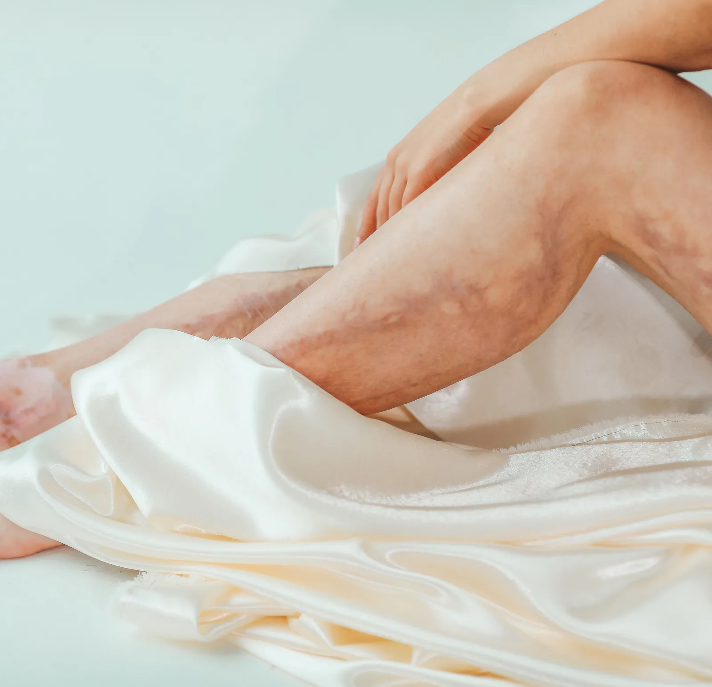

Piernas hinchadas por el calor: alivio en Medellín y cuando viajas a tierra caliente
Pasa en las tardes de más sol en Medellín y, sobre todo, cuando bajas a la costa o a cualquier plan de tierra caliente: las piernas hinchadas, pesadas, con la marca de las sandalias en los tobillos. No es cosa de tu cabeza. El calor tiene un efecto real sobre la circulación, y casi todo lo que ayuda es sencillo.

Vives en Medellín, acostumbrada al clima de siempre: esos 20 y tantos grados que casi no cambian entre enero y diciembre. Tu cuerpo se acostumbra a esa temperatura estable, y por eso las tardes de más sol, y sobre todo el salto a la costa, al Pacífico o a un fin de semana en Santa Fe de Antioquia, te cuestan más de lo que imaginas. Las piernas hinchadas por el calor tienen una explicación concreta, y saberla ayuda a elegir qué hacer.
Por qué el calor hincha las piernas (y por qué el viaje lo empeora)
Cuando hace mucho calor, el cuerpo busca bajar su temperatura de dos formas: sudando y dilatando los vasos sanguíneos de la piel, un proceso llamado vasodilatación, para liberar calor hacia el exterior. Esa dilatación acerca más sangre a la superficie de la piel, pero también hace que salga más líquido desde los vasos pequeños hacia los tejidos que los rodean. Ese exceso de líquido en los tejidos es lo que se conoce médicamente como edema.
En piernas sanas, las venas y los vasos linfáticos suelen drenar ese líquido extra sin mayor problema. Pero las piernas son la parte del cuerpo más alejada del corazón: la sangre y el líquido tienen que vencer la gravedad para regresar, y el calor le suma trabajo a un sistema que ya de por sí se esfuerza.
En un viaje se suma un segundo mecanismo: la inmovilidad. Al caminar, los músculos de la pantorrilla se contraen y empujan la sangre de las venas hacia arriba, como una bomba. Horas sentada en el bus, el carro o el avión apagan esa bomba casi por completo, así que la sangre y el líquido se quedan estancados en la parte baja de las piernas. Súmale que en los viajes casi nadie toma suficiente agua, y la deshidratación empeora un poco más el cuadro.
Si ya tienes problemas de circulación, el calor se nota más
Cuando existe una insuficiencia venosa, es decir, las válvulas de las venas de las piernas ya no cierran del todo bien, parte de la sangre se queda estancada en lugar de subir hacia el corazón. Eso aumenta la presión dentro de las venas y empuja todavía más líquido hacia los tejidos. Por eso, si convives con várices o con piernas pesadas de forma habitual, es normal que los síntomas se disparen justo en los días más calurosos.
El sedentarismo y pasar muchas horas de pie o sentada en un mismo sitio, algo frecuente cuando el calor invita a moverse menos, tienden a sumarse a este efecto.
De la montaña al mar: por qué el cambio de clima pesa tanto en Medellín
Aquí vivimos con un clima de montaña, templado casi todo el año, mientras la costa Caribe o el Pacífico colombiano manejan temperaturas mucho más altas y más humedad. Ese contraste explica, en parte, la hinchazón: el cuerpo acostumbrado a un clima templado no está entrenado para el calor intenso, y la vasodilatación se dispara con más fuerza los primeros días del viaje.
Por eso no es raro que la hinchazón sea peor justo al llegar, y que ceda un poco a medida que el cuerpo se adapta.
¿Quién lo nota más?
El calor le pasa factura a todo el mundo, pero no por igual. Suele notarse más en:
- Adultos mayores, porque con la edad la circulación de retorno hacia el corazón suele ser menos eficiente.
- Quienes llegan a Medellín desde climas más fríos, o viajan de Medellín a tierra caliente, porque el cuerpo tarda unos días en adaptarse al cambio brusco de temperatura.
- Quienes pasan muchas horas de pie en el trabajo: si es tu caso, te sirve trabajar sentada o de pie: qué le pasa a tus venas.
- Mujeres embarazadas, porque el cuerpo retiene algo más de líquido de forma normal durante esta etapa.
- Quienes ya tienen várices o insuficiencia venosa.
Cómo aliviar las piernas hinchadas por calor en el día a día
La mayoría de las veces, unos cuidados sencillos bastan para sentir alivio:
- Enfría tus piernas. Una ducha o un chorro de agua fría en las pantorrillas, un par de veces al día, ayuda a que los vasos se contraigan y a bajar la hinchazón.
- Eleva las piernas por encima del nivel del corazón un rato al día, sobre todo al final de la jornada.
- Mantente hidratada. Tomar suficiente agua ayuda a que el cuerpo regule mejor los líquidos, en lugar de retenerlos.
- Evita el agua muy caliente en la ducha o la tina: tiene un efecto parecido al del calor ambiental.
- Sigue moviéndote. Caminar activa la bomba muscular de la pantorrilla, que ayuda a que la sangre suba desde las piernas.
- Evita ropa y calzado muy ajustados que compriman tobillos, ingle o cintura.
- Considera medias de compresión graduada en los días de más calor, sobre todo si ya tienes antecedentes de piernas hinchadas o várices.
Muchos de estos hábitos son los mismos que recomendamos para cuidar la circulación todo el año: están en nuestros 7 hábitos para mejorar la circulación de piernas. La comida también influye en cómo responde tu cuerpo al calor, y lo contamos en alimentación y circulación: qué comer para cuidar tus piernas.
Eso sí, estos hábitos alivian la hinchazón que es solo por calor; no corrigen una insuficiencia venosa de fondo si ese es el problema real.
Qué hacer antes, durante y al llegar a tierra caliente
Si el calor viene con viaje, varias medidas empiezan desde que armas la maleta.
Antes de salir de casa
- Separa con tiempo las medias de compresión que vas a usar en el viaje. Pruébatelas antes, no las estrenes el mismo día, para confirmar que la talla y el nivel de compresión te quedan bien.
- Si el trayecto va a ser largo, en bus, carro o avión, planea paradas o levantarte cada 1 a 2 horas.
- Evita la ropa ajustada en la cintura o la ingle para el día del viaje.
Durante el viaje
- Muévete: camina por el pasillo, flexiona los tobillos y contrae las pantorrillas varias veces por hora si estás sentada.
- Hidrátate con agua y modera el alcohol y la cafeína.
- Evita cruzar las piernas durante trayectos largos.
Ya en tierra caliente
- Enfría las piernas con agua fría o una ducha fresca al llegar.
- Eleva las piernas un rato por encima del nivel del corazón, sobre todo el primer día.
- Cuida la sal en las comidas de vacaciones: el exceso favorece que el cuerpo retenga más líquido.
- Sigue moviéndote. Caminar en la playa o dar una vuelta por el pueblo ayuda más que quedarte quieta bajo una sombrilla todo el día.
Nada de esto es complicado ni caro.
Las medias de compresión graduada ayudan a que la sangre regrese mejor desde las piernas, incluso con calor. Pero no son un escudo: no evitan toda la hinchazón, y no reemplazan que te muevas cada tanto durante el viaje.
En Seravena recomendamos probarte las medias con calma antes del viaje, nunca estrenarlas el mismo día, porque una media mal ajustada incomoda más de lo que ayuda y puede desanimarte a usarla el resto del trayecto. Si lo que te preocupa es el viaje en sí, más allá del calor, te sirve nuestra guía de piernas en viajes largos: cómo cuidarlas en avión o carro.
Señales de alarma: cuándo no es solo el calor
La mayoría de las veces, la hinchazón por calor o por el viaje es parecida en las dos piernas, blanda al tacto, y mejora con reposo, elevación, frío y unos días de adaptación al clima. Cuando la hinchazón aparece de un momento a otro en una sola pierna, y viene con dolor, calor local o enrojecimiento, la causa probable ya no es solo el clima.
Si te pasa cada vez que sube la temperatura o cada vez que viajas, y ya viene con pesadez o várices, en Seravena preferimos confirmarlo con un eco doppler antes de asumir que es solo por el clima: una valoración de insuficiencia venosa en Medellín te ayuda a entender qué tanto influye tu circulación de fondo, más allá del día caluroso o del viaje puntual.
Si tu viaje es esta semana, el primer paso no es comprar nada nuevo: es sacar esta noche las medias que ya tienes, probártelas y confirmar que te quedan bien antes de que la maleta quede cerrada. Y si la hinchazón ya no mejora con estas medidas, aunque no viajes, anota en qué momento del día la notas más, si mejora al elevar las piernas o con agua fría, y si es igual en ambas piernas. Con eso ya puedes agendar una valoración con nuestro equipo.
Preguntas frecuentes
¿Por qué se hinchan más las piernas cuando hace calor?
Porque el calor dilata los vasos sanguíneos de la piel para ayudar al cuerpo a liberar temperatura, y esa dilatación favorece que salga más líquido hacia los tejidos de las piernas. Como las piernas están más alejadas del corazón, ese líquido extra tiende a acumularse por efecto de la gravedad, lo que se nota como hinchazón, sobre todo al final del día.
¿Por qué se hinchan más las piernas cuando viajas de Medellín a tierra caliente?
Porque se juntan dos efectos: el calor dilata los vasos sanguíneos de la piel y deja escapar más líquido hacia los tejidos de las piernas, y las horas sentada en el bus, el carro o el avión apagan la bomba muscular de la pantorrilla que normalmente ayuda a que la sangre regrese al corazón. Si además vienes de un clima templado, el cuerpo no está acostumbrado a ese calor y la hinchazón puede sentirse más fuerte los primeros días.
¿Sirven las medias de compresión para viajar a la costa o a clima caliente?
Sí. Hay buena evidencia de que ayudan a que la sangre regrese mejor desde las piernas y reducen el riesgo de que se formen coágulos en viajes largos; sobre cuánto reducen la hinchazón en sí misma, la evidencia es más modesta, aunque muchas viajeras notan menos pesadez. Aun así, no sustituyen moverte durante el trayecto, y conviene probarlas antes del viaje para confirmar que la talla y el nivel de compresión te quedan bien.
¿Cómo sé si la hinchazón es solo por el calor o hay un problema circulatorio?
La hinchazón por calor suele aparecer en las dos piernas por igual, es blanda y mejora con reposo, elevación de las piernas y frío local. Si en cambio la hinchazón es más marcada en una sola pierna, persiste, o se acompaña de dolor, pesadez importante o várices visibles, puede tratarse de una insuficiencia venosa que conviene valorar con un especialista.
¿Es buena idea tomar un diurético para la hinchazón por calor?
No se recomienda automedicarse con diuréticos para este tipo de hinchazón. El problema no es que tengas demasiado líquido en el cuerpo, sino que el calor dilata los vasos y ese líquido se queda en las piernas por efecto de la gravedad; un diurético no corrige eso y, en los días de más calor, puede deshidratarte todavía más. Si la hinchazón te preocupa, lo más seguro es consultarlo antes de tomar cualquier medicamento por tu cuenta.